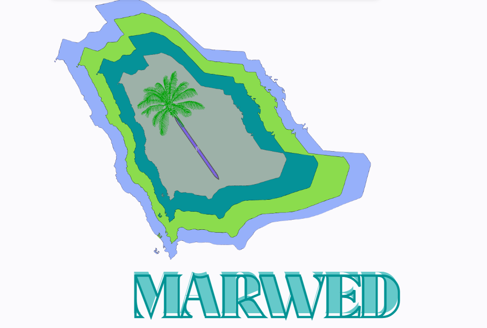

Graduation Project – Multimodal Fake News Detection
A Multimodal Deep Learning Approach for Fake News Detection Across Text and Visual Modalities.
A Multimodal Deep Learning Approach for Fake News Detection Across Text and Visual Modalities.
May 2025
An academic group project developed as part of the System Analysis & Design course. The system focuses on designing a centralized tourism guide application that helps residents and visitors discover attractions, events, and activities.
